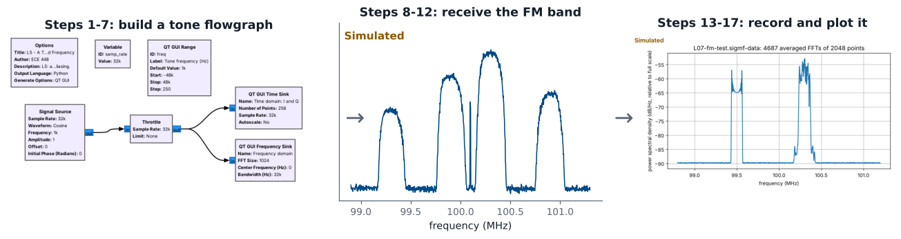
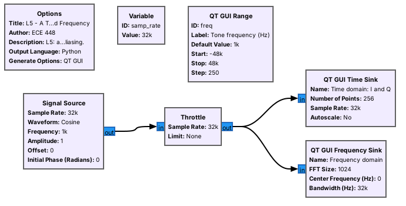
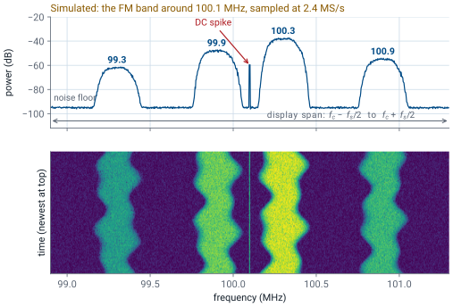
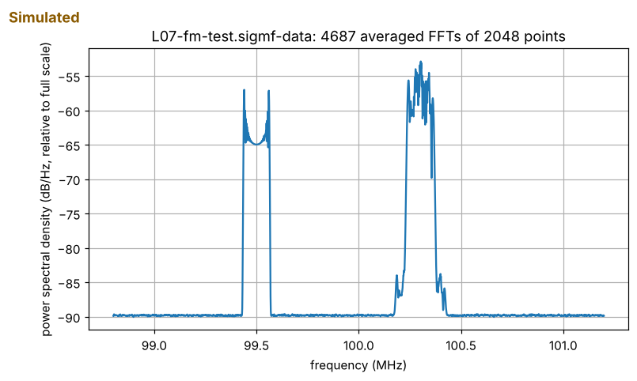

L5 Lab — First Flowgraphs#
First Flowgraphs
Build a tone flowgraph from an empty canvas, then receive, record, and plot the FM band on the PlutoSDR.
L5 Lab · Module 2: SDR & GNU Radio Foundations · Dr. Neil Rogers
Learning Objectives
- I can install GNU Radio and use GNU Radio Companion (GRC) to build, inspect, and run a basic flowgraph.
- I can capture a real RF signal using an SDR and interpret its time- and frequency-domain representations.
The Big Picture

Steps 1 to 7 run your own tone flowgraph at a 48 kHz sample rate and read where the \(+20\), \(+30\), and \(-35\) kHz tones appear. Steps 8 to 12 run L05-fm-spectrum.grc on the PlutoSDR, centered on 96.5 MHz, and step the RF gain from 0 to 71 dB. Steps 13 to 17 record about 3 s with the SigMF Sink and plot the file. The pictures use the lesson’s settings, not today’s. Each reading goes beside your Part 1 prediction in Tables A and B of the packet, and the screenshots go in Figures 1 to 3. Nothing in this lab transmits.
Predict First
Choose a sample rate and set a tone. Before you press Show where it appears, mark on the frequency sink where you think the spike will be, by clicking it or with the My Prediction slider. Changing the sample rate, the tone, or your mark hides the answer again, so each guess comes first. The widget offers 32, 40, and 64 kHz, not the 48 kHz of today’s flowgraph, so its answers are not your Part 1 answers. Make one more prediction before Step 11: which of your three gain views in Figure 2 will show signals between stations where nothing transmits.
Build the Tone Flowgraph
Start from an empty QT GUI canvas, not
L05-tone.grc.Set
samp_rateto 48000; add a slider, source, throttle, and two sinks.Run it; screenshot the canvas and the window at \(+30\) kHz.
Read where each tone appears.

This part needs only your laptop.
Start GRC. Choose File, New, QT GUI. Do not open
L05-tone.grc; Figure 1 shows the flowgraph you build. If GRC does not open, go back to the lesson’s “Verify the Install” frame.Set the sample rate. Double-click the
samp_ratevariable and set it to 48000.Add the slider. Add a QT GUI Range with ID
freq, from \(-72000\) to \(72000\) in steps of 250, default 1000.Add the source. Add a Signal Source: type complex, sample rate
samp_rate, waveform Cosine, frequencyfreq.Add the rest and connect. Add a Throttle (complex,
samp_rate), a QT GUI Time Sink (complex), and a QT GUI Frequency Sink (complex, bandwidthsamp_rate). Connect the source to the throttle and the throttle to both sinks. Every connection must be black; a red one is a type mismatch, so check that each block’s type is complex.Run it. Set the slider to 30 kHz. Take one screenshot that shows your canvas and the running window side by side, and paste it as Figure 1.
Read the tones. Set the slider to each tone in Table A, read where the spike appears on the frequency sink, and compare with your Part 1 prediction. A computed tone has no noise or hardware in the way, so if a reading disagrees with your prediction, check
samp_rateand the Signal Source’s frequency first.
The FM Band and the Gain
Put the whip on RX and run
L05-fm-spectrum.grc.Center on 96.5 MHz and read the band on screen.
Find the strongest station, off the DC spike.
Step the RF gain from 0 to 71 dB; screenshot three views.

Connect the PlutoSDR. Screw the course’s broadband whip onto the RX port and plug the Pluto’s middle USB port into your laptop. Open and run
L05-fm-spectrum.grc. The PlutoSDR Source opens the radio atip:192.168.2.1; if you have not switched your Pluto to NCM mode on a Mac, type theusb:URI fromiio_info -sinto the PlutoSDR Source instead, as the lesson’s “Connect the PlutoSDR” frame shows.Read the band. Set the Center frequency (Hz) slider to 96.5 MHz, hover the cursor at the left and right ends of the plot to read the lowest and highest frequencies it shows, and compare with your Part 1 prediction.
Find the strongest station. Drag the center frequency slowly from 88 to 108 MHz and stop on the tallest station. Uncheck DC tracking and find the spike at the center of the display: it is the receiver’s own DC offset, not a station. Check the box again, then tune so that the station sits a little to one side of center, because DC tracking can subtract part of a signal centered at 0 Hz.
Step the gain. With the station on screen, set the RF gain (dB) slider to 0, 20, 40, 60, and 71 dB in turn, and watch the noise floor, the station, and the space between stations at each.
Screenshot three views. Choose the gain you would use to receive weak stations in this room. Take a screenshot of the display at 0 dB, at your gain, and at 71 dB, with the same station on screen in all three, and paste them as Figure 2.
Record and Plot
Type the center and your gain in as the sliders’ defaults.
Enable the SigMF Sink, run about 3 s, and compare the file size.
Plot the file with
L05-psd.py.

Set the defaults. Stop the flowgraph. Double-click the Center frequency (Hz) slider block and type the center frequency of your Figure 2 views as its Default Value, then do the same for the RF gain (dB) slider with your gain from Step 12. The SigMF Sink writes the center frequency to the meta file when the run starts, so it has to be right before you press Run.
Enable the SigMF Sink. Right-click the gray SigMF Sink and choose Enable. Its file name,
fm_capture, makesfm_capture.sigmf-dataandfm_capture.sigmf-metain the flowgraph’s folder. GRC outlines the block in orange because GNU Radio 3.10 marks it deprecated, but the block records correctly.Record. Run the flowgraph for about 3 s and stop it. Read the size of
fm_capture.sigmf-datain bytes from its file properties, divide by \(10^6\) to get MB, and compare with your Part 1 prediction. A file browser’s own “MB” may be \(2^{20}\) bytes, about 5% larger, so use the byte count. Openfm_capture.sigmf-metain a text editor and check that its center frequency is the one you set.Disable the sink. Right-click the SigMF Sink and choose Disable, so the next run does not overwrite the capture.
Plot it. From the radioconda prompt, in the flowgraph’s folder, run
python L05-psd.py fm_capture.sigmf-data. It reads the sample rate and center frequency from the meta file. Paste the plot as Figure 3.
No Hardware?
If your PlutoSDR is missing or will not open
Steps 1 to 7 need no radio. For Steps 8 to 17, work at the laptop of a classmate whose PlutoSDR works, taking turns, and take your own readings, your own screenshots, and your own capture; note whose PlutoSDR you used on the packet’s Documentation line. Bring the failed Pluto to EI so it works before the L7 Lab.
If no PlutoSDR in the room works, do Steps 15 and 17 on a simulated recording. Download L07-fm-test-tx.grc and run it; it needs no radio, and it writes L07-fm-test.sigmf-data and .sigmf-meta, 4 s at 2.4 MS/s centered on 100.0 MHz. In Step 15, read that file’s size and compare it with your Part 1 prediction scaled to 4 s. In Step 17, run python L05-psd.py L07-fm-test.sigmf-data. Write “Simulated” on Figure 3 and on the Documentation line.
Your Part 2 Entries
This frame collects every box you filled in on this page. Your entries stay in this browser only, saved as you type. Download my packet writes them into the Measured cells of the blank packet and saves the PDF. The download locks every field, the Predicted cells included, so type your predictions into your own copy of the packet first, then use Fill my own copy and choose that file: the page keeps your predictions and adds your measurements beside them. Paste Figures 1 to 3 and write Part 3 in your copy, or on the printout, and upload one PDF to Gradescope. Export entries saves a small backup file you can Import on another laptop.
Lab Packet
The L5 Lab packet is one submission, turned in complete before Lesson 6:
Part 1, Predict (individual, before the lab period): the shaded Predicted cells of Tables A and B, with your work for one row of each attached.
Part 2, Measure (in class, on your own laptop and PlutoSDR): the white Measured cells of the same tables, and Figures 1 to 3.
Part 3, Analyze (individual, after the lab): three prompts, each answered from your own tables and figures.
For Part 3
Do Part 3 after class, with your tables and figures beside you. It asks about three comparisons:
Table A and Figure 1: your predicted and measured tone positions at 48 kHz.
Figure 2: the three gain views, and the gain you chose.
Your recording against the live display: the file size against your prediction, and Figure 3 against Figure 2.
I grade each answer on a claim, the evidence from your own tables and figures, the reasoning that connects them, and the uncertainty in your readings.
Looking Ahead
Keep both capture files: Lesson 7’s FM receiver plays fm_capture.sigmf-data back through a SigMF Source before it receives the live band.